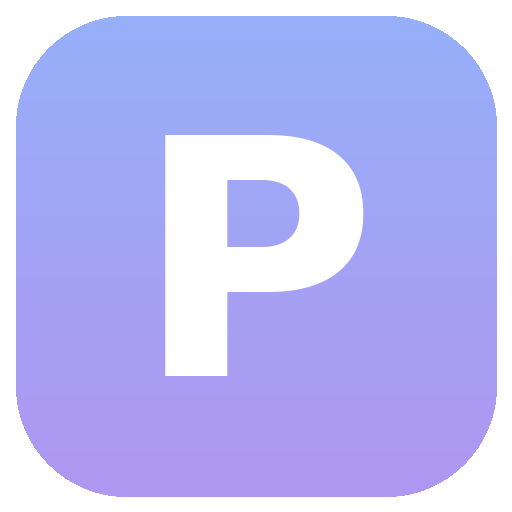

Problet
Браузер, написанный с нуля на Electron. Свои панели и кнопки, пространства, заморозка вкладок, блокировщик рекламы, менеджер паролей и встроенные инструменты вместо расширений.
Скачать
Все сборки: Releases. Linux: после скачивания сделай AppImage исполняемым (chmod +x). macOS: приложение не подписано, при первом запуске открой его через контекстное меню → «Открыть». Обновляться можно прямо в браузере: «Настройки» → «Обновления».
Что внутри
- Панели вкладок, инструментов и закладок переставляются как угодно, каждая кнопка живёт на любой панели
- Пространства, заморозка и выгрузка вкладок, режим инкогнито
- Блокировщик рекламы и трекеров, в том числе на YouTube
- Зашифрованный менеджер паролей, закладки с импортом из других браузеров
- Встроенный SVG-редактор, таблица символов, калькулятор в адресной строке